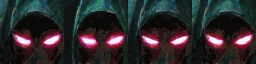
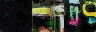
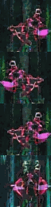
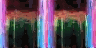
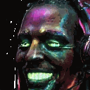

01 · SIGNAL WALL
A terminal that rendered its own chrome
the window is a nine-slice frame — CSS border-image stretches one 256×192
render into any terminal, any panel, any tooltip. the code inside is typed live.
SECURITY ADVISORY
all pixels on this site were produced on open equipment. zero stock imagery. the smiths of signal run palette-locked — 255 hues per club, remapped in post with CIEDE2000, won in post not in prompts.
hold the cursor on this line — a 192×48 nine-slice tooltip appears, its punched middle grows to any text
02 · GADGET SHELF
Loose hardware from the club bin
component icons and indicator lenses are atlas crops —
one render, four chips; three LEDs cycling on a timer, straight from the generated sheet.
club status lights — live crops cycling

0x2f 0x4b 0x21 0xee 0x55 0x9a — the club handshake is a sprite;
03 · THE CREW
Four faces, one seed — the variants trick
every mood of the ghost admin renders at the same pinned seed so only the
expression moves. the runner is a four-way walk4 sheet, its left column mirrored in post. the spectre barely.
Ghost Admin
npc · variants ×4 · 64×64

Runner
npc · walk4 · 64×64 · left mirrored

Signal Spectre
npc · variants ×2 · 48×48

04 · NODE GRID
A city of copper that assembled itself
one 20-class wang kit of copper traces, painted onto a canvas tile by tile from a
layout map — plus the datasheet the club prints its routes on.
ROUTE: relay the handshake
the beacon node stands cold. trace the copper ring on the grid and deliver the club crest to the relay — seed it well, smith.
05 · HONORS
Badges of the Bikini Club
cast in the same palette, cropped from the same atlas render.